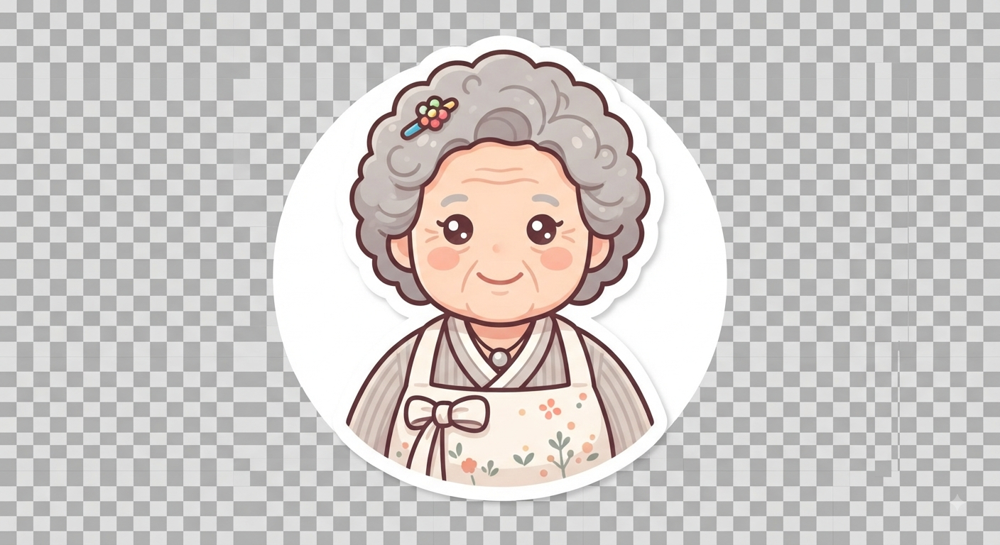

고려대·홍익대 세종캠퍼스 학생, 유학생, 교직원, 인근 주민이라면 한 번쯤 겪어본 이야기예요.
터줏대감 사장님 가게는 네이버·카카오맵 등록이 안 됐거나 정보가 부정확해서, 검색해도 아예 나오지 않아요.
더 가성비 좋고 맛있는 로컬 식당이 근처에 있는데도, 알 방법이 없어 늘 같은 선택지만 반복해요.
손님은 숨은 맛집을 알게 되고, 사장님은 홍보와 매출이 느는 구조 — 우리 동네가 함께 잘되는 방법이에요.
지도에 잘 나오지 않는 로컬 맛집 위치를 한눈에. 실제 서비스에서는 네이버맵 API로 연동됩니다.
카테고리를 골라보세요. 마음에 드는 곳은 하트를 눌러 "가보고 싶은 곳"에 저장할 수 있어요.

매운맛 강도, 선호 카테고리, 예산 범위 같은 간단한 취향 설문으로 나에게 딱 맞는 맛집을 추천받아 보세요.
베타테스트 오픈 소식과 새로운 맛집 업데이트를 이메일로 가장 먼저 알려드릴게요.